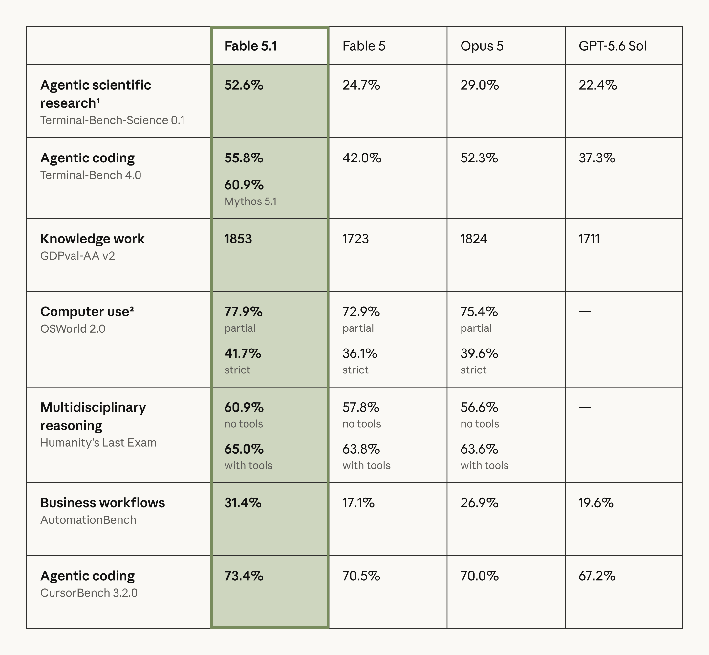

Claude Fable 5.1

一句话定位：同一底座，两种访问边界
Anthropic 在 2026-09-01 同时发布 Claude Fable 5.1 与 Claude Mythos 5.1。官方的关键定义是：两者是同一 underlying model 的两种部署形态。
| 维度 | Claude Fable 5.1 | Claude Mythos 5.1 |
|---|---|---|
| 可用性 | General availability | Trusted access only |
| 核心能力 | 与 Mythos 5.1 共用底层模型 | 与 Fable 5.1 共用底层模型 |
| 主要差异 | 部署时加入更积极的 classifiers / fallback | 更少限制，但需要受控访问 |
| Atlas 位置 | Anthropic 主时间线 | 本笔记中作为配对部署形态说明，不冒充另一套底座 |
这一区分很重要：Fable / Mythos 不是能力大小档位，也不是像 Haiku / Sonnet / Opus 那样的常规产品分层。 它们更像同一前沿 checkpoint 在不同风险边界下的服务接口。
核心规格
| 项目 | 官方值 | 对工程实践的含义 |
|---|---|---|
| Model ID | claude-fable-5-1 | API 中应使用精确 ID，不以营销名猜测 snapshot |
| Context window | 1M tokens | 可承载大型代码库、长文档与长轨迹，但不等于 1M 内每个信息点都能被同等利用 |
| Max output | 128K tokens | 适合长代码、长报告与多阶段工具结果整理，同时需要防止无约束输出拉高延迟和成本 |
| 输入模态 | Text + image | 视觉材料可以进入 agent 工作流；输出仍是 text |
| Thinking | Adaptive thinking 始终开启 | 默认 effort 为 high，可按消息调整 effort；不再把「是否思考」当成简单开关 |
| Knowledge / training cutoff | 2026-06 | 截止时间不替代检索；涉及最新事实仍需工具或外部资料 |
| 输入价格 | $10 / MTok | 高于日常轻量模型，适合高价值、长时程任务 |
| 输出价格 | $50 / MTok | 需要控制无效长输出与反复自述 |
| Cache read | $0.25 / MTok | 对重复长上下文、代码库前缀、规则与固定资料非常关键 |
| 生命周期 | Active；最早 2027-09-01 退役 | 可以进入生产评估，但仍应固定模型 ID 并做回归测试 |
能力证据：提升集中在哪里
1. 长时程终端与科学研究
| Benchmark | Fable 5.1 | Fable 5 | Opus 5 | GPT-5.6 Sol |
|---|---|---|---|---|
| Terminal-Bench-Science 0.1 | 52.6% | 24.7% | 29.0% | 22.4% |
| Terminal-Bench 4.0 | 55.8% | 42.0% | 52.3% | 37.3% |
Terminal-Bench 4.0 评估真实终端 / CLI 工作，Terminal-Bench-Science 则把任务扩展到科研工作流。系统卡进一步说明：Terminal-Bench 4.0 结果在 Claude Code --bare 模式和最大 thinking effort 下测得；Mythos 5.1 在同一项目上为 60.9%。因此，55.8% 是带明确 harness 的 agent 结果，不应写成裸模型通用能力。
2. 真实业务工作流与知识工作
| Benchmark | Fable 5.1 | Fable 5 | Opus 5 | GPT-5.6 Sol |
|---|---|---|---|---|
| GDPval-AA v2 | 1853 | 1723 | 1824 | 1711 |
| AutomationBench | 31.4% | 17.1% | 26.9% | 19.6% |
AutomationBench 不是单步问答：任务来自 CRM、Slack、Google Workspace 等企业应用，要求 agent 完成端到端业务流程。Fable 5.1 的 31.4% 仍然说明真实自动化远未解决，但相较 Fable 5 的 17.1% 是明显跃迁。正确解读是工作流成功率翻升，而不是已经达到无人监督部署水平。
3. Computer use 与 coding
| Benchmark | Fable 5.1 | Fable 5 | Opus 5 | GPT-5.6 Sol |
|---|---|---|---|---|
| OSWorld 2.0 partial | 77.9% | 72.9% | 75.4% | - |
| OSWorld 2.0 strict | 41.7% | 36.1% | 39.6% | - |
| CursorBench 3.2.0 | 73.4% | 70.5% | 70.0% | 67.2% |
OSWorld 的 partial 与 strict 差距（77.9% vs. 41.7%）比单个领先数字更有信息量：模型常常能完成任务的一部分，但在严格的最终状态验收下仍会失败。对 agent 研究而言，这提示我们必须保存最终状态、部分完成度和失败位置，不能只用一个二元 reward 覆盖全过程。
4. 多学科推理与工具增益
| Humanity's Last Exam | Fable 5.1 | Fable 5 | Opus 5 |
|---|---|---|---|
| No tools | 60.9% | 57.8% | 56.6% |
| With tools | 65.0% | 63.8% | 63.6% |
工具为 Fable 5.1 带来约 4.1 个百分点的绝对增益，但增益不是无限的。对训练设计而言，下一步不只是增加 tool calls，而是训练模型判断何时调用、如何验证返回、何时停止继续检索。
经济性：官方说的「更便宜」不是降价
Anthropic 估计，相比前代，Fable 5.1 在典型工作负载上可降低约 25% 的总体成本，在高度 agentic 的任务上最高可接近 45%。这不是简单的每 token 标价下降，而是来自更少的无效轨迹、更高的任务一次完成率与缓存结构。
因此应该用下面的口径做自己的 A/B test：
- 每个成功任务的总 token 与总价格；
- 平均工具调用次数、失败调用次数与重复调用次数；
- 到达可验收最终状态所需的 turn 数；
- cache hit 后的真实成本，而不是只对比公开 list price；
- 在相同任务成功率目标下的最低 effort。
Safeguards 与 fallback：能力评测不能脱离部署路径
Fable 5.1 会在部分高风险领域触发 classifiers，并把请求转交给已经发布、限制更成熟的模型：
- 部分 cyber 请求可能 fallback 到 Claude Opus 4.8；
- 部分 biology / medical 相关请求可能 fallback 到 Claude Opus 5；
- Anthropic 表示相较 Fable 5，Fable 5.1 的 cyber false positives 减少约 60%，基础 biology / medical fallback 减少约 85%；
- Fable 5.1 与 Mythos 5.1 的底座相同，但部署 safeguards 会使最终用户体验与 benchmark 行为出现差异。
API / 迁移时真正会踩的坑
Fable 5.1 带来一些 additive features，也有会破坏旧工作流的行为变化。
新增能力
- per-message effort：同一会话不同阶段可使用不同 effort；
- turn-scoped system messages：规则可以只约束当前 turn；
- readable progress updates：长任务中可以返回更可读的进度；
- content provenance：为内容来源追踪提供更明确的接口支持；
- 更低的 cache read 成本，适合重复长前缀。
Breaking changes
- forced tool use 的部分旧写法会报错，不能假设和 Fable 5 完全兼容；
- 早期模型无法读取 Fable 5.1 的 thinking blocks；
- 如果编辑历史消息，已有 thinking blocks 可能失效；
- adaptive thinking 始终开启，迁移时需要重新校准 latency、effort 与预算。
这意味着生产迁移不应只替换 model string。至少要回归：tool choice、长会话重放、消息编辑、缓存命中、thinking block 兼容和最大输出限制。
对 Agent Training / Evaluation 的启发
建议把 Fable 5.1 类模型的轨迹拆成五层：
- 计划层：目标分解、effort 选择、是否需要工具；
- 执行层：工具调用、computer use、终端操作与中间产物；
- 状态层：应用 / 文件 / 页面最终状态，而不仅是文本输出；
- 路由层：拒答、classifier、fallback、模型切换和缓存命中；
- 验收层：strict success、partial success、成本、时延和恢复成功率。
可直接转化成实验的问题：
- 同一任务在 high / medium effort 下，成功率和每成功任务成本的 Pareto 前沿是什么？
- 失败轨迹中有多少属于计划错误、工具错误、状态验证缺失或 fallback 影响？
- 1M context 的收益来自更多信息，还是来自更少的 retrieval / handoff？
- strict 与 partial success 的差值能否被状态验证器、恢复策略或 verifier-guided RL 缩小？
- cache-aware rollout 调度能否在不改变训练目标的情况下显著降低数据生成成本？
编辑判断
Fable 已经形成连续的正式模型序列：Fable 5 → Fable 5.1。Atlas 因此把两者直接放在 Anthropic 主时间线上，和 Sonnet / Opus 一样作为可见模型节点；Mythos 5.1 仍作为同底座的受限部署形态记录，避免把同一个底座重复统计成两代模型。
它最值得持续追踪的三件事是：
- agentic scientific research 的大幅跃迁是否能在独立 harness 复现；
- strict state success 能否追上 partial success；
- fallback / safeguards 对真实任务成功率、误拒和可解释性的影响。
资料边界
一手资料
- Tech Blog / Announcement
- Platform Docs
- System Card (PDF)
- What's new in Fable 5.1
- 本地来源索引（网页发布版）
- System Card 证据摘记（网页发布版）